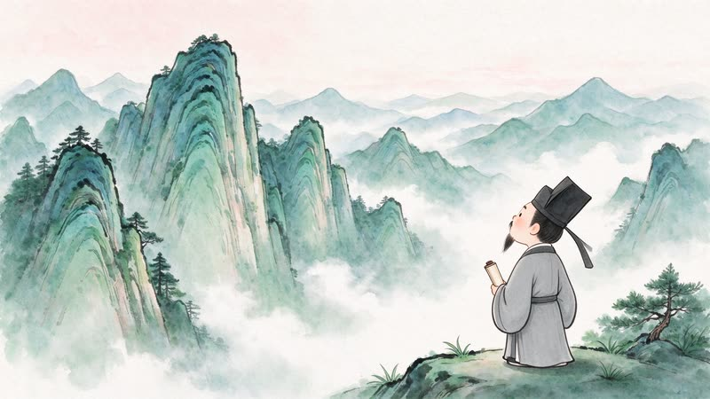

暮江吟
暮江吟
暮江吟
[唐] 白居易
一道残阳铺水中，半江瑟瑟半江红。
认识诗人诵读全诗读懂题目逐句品析体会情感课堂练习
十步走完一首诗：从"暮、吟"三字破题，到"露似真珠月似弓"两个比喻为什么是神来之笔，最后落到诗人的心情。
⬇ 下载 PPTX7.8 MB · 12 页
把一首古诗拆成"绘本"来讲：先认识诗人，再听一遍诵读，然后一句一句读懂字词、品出比喻与道理， 最后轻声吟诵。每一页都配了水墨风插画与讲解，学生跟着走一遍就能记住。
暮江吟
十步走完一首诗：从"暮、吟"三字破题，到"露似真珠月似弓"两个比喻为什么是神来之笔，最后落到诗人的心情。
⬇ 下载 PPTX 望庐山瀑布
望庐山瀑布
"香炉"不是香炉、"三千尺"不是真三千——把夸张与想象讲清楚，学生就懂了李白为什么是"诗仙"。
⬇ 下载 PPTX 雪 梅
雪 梅
围绕"各有所长"讲透：梅不如雪白、雪不如梅香，用一场梅雪之争告诉学生看人要全面地看。
⬇ 下载 PPTX
题西林壁从"横看/侧看/远近高低"的不同景象，引出"当局者迷"的哲理，是古诗里讲道理最漂亮的一首。
⬇ 下载 PPTX 爬山虎的脚
爬山虎的脚
跟着"观察大师"叶圣陶学观察：脚的形状、怎么巴住墙、没触着墙的脚会怎样——配课后观察日记任务。
⬇ 下载 PPTX